Stickies · first visual preview
Actual GTK renders using disposable notes. Compare the same note in All Notes and an individual window, then review its minimum and larger sizes. The tool panel stays hidden until opened and does not resize the note.
Paper
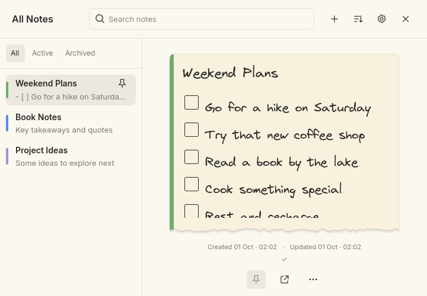
Compact All Notes · 720×500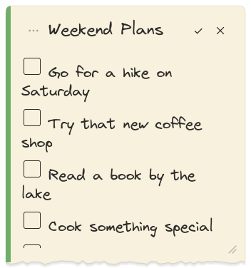
Individual note Show expanded tools
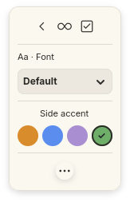
This panel opens beside the note and preserves its writing area.Playful
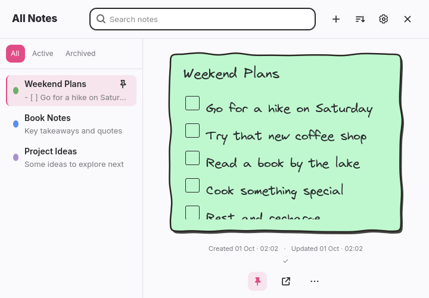
Compact All Notes · 720×500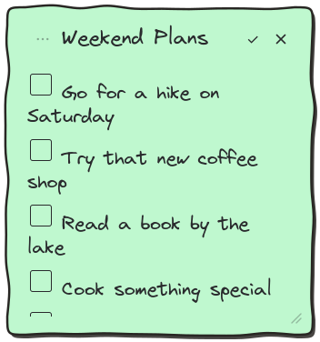
Individual note Show expanded tools
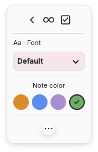
This panel opens beside the note and preserves its writing area.Minimal Light
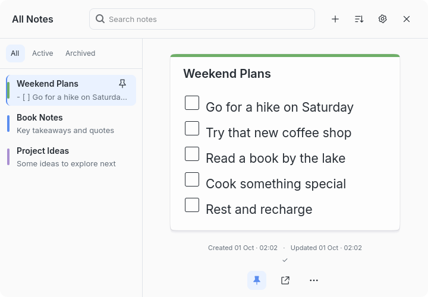
Compact All Notes · 720×500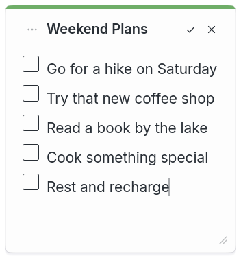
Individual note Show expanded tools
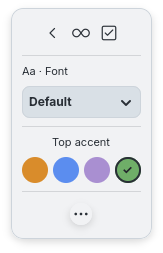
This panel opens beside the note and preserves its writing area.Minimal Dark
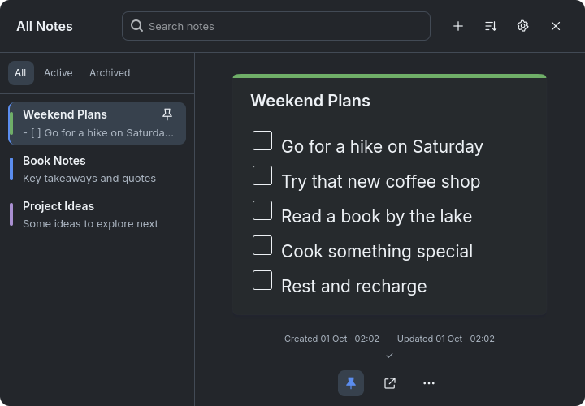
Compact All Notes · 720×500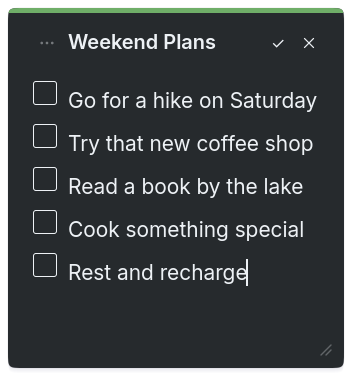
Individual note Show expanded tools
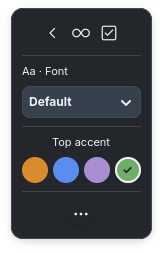
This panel opens beside the note and preserves its writing area.